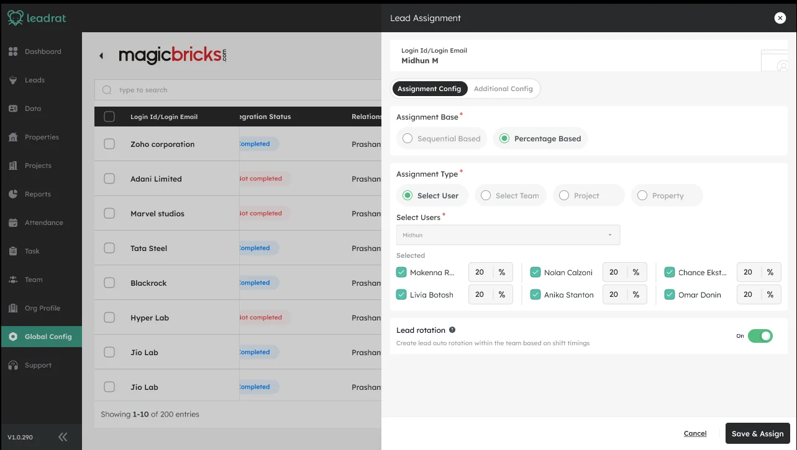

Working with space taught me to think about structure and constraints. Product design taught me to think about behaviour, systems and people. The medium changed. The curiosity didn't. Scroll, and watch a floor plan become a product screen.
01 · Blueprint
Here are a few questions I have spent time answering.
Product problems, systems and experiences I have worked on.
???
B2B SaaSCRMWorkflow designAlgorithm UX
Why do salespeople ignore the CRM they were given?
A deep dive into user behaviour, workflows and the real reason behind low adoption. The case study covers one piece of it: how leads get handed out. A percentage-quota rule and one configuration screen replaced four disconnected ways of assigning a lead.
Role
Sole designer
Worked with
PM + Engineering
Scope
Global assignment config
100%quota accuracy in the worked 10-lead simulation, no rounding drift
4 → 1assignment types (user, team, project, property) in one panel
Pendingdrop in manual reassignment tickets, to be measured
Four separate rules, each ready to claim the lead.
One rule instead: a 50 / 30 / 20 split. Each lead goes to whoever is furthest behind their share.
Agent A50%0
Agent B30%0
Agent C20%0
Press Replay to hand out 10 leads.
leadrat · global config

The real configuration screen: every agent has a live quota field.
AI productDecision design
Why do bad ideas survive meetings?
Exploring groupthink, decision rituals and how to build a better filter for ideas. The sketch on the right is the question, not the findings.
Type
Concept
Focus
Groupthink, rituals
Status
In progress
Case study in progress
Run the meeting
Dots show how strong each idea is. Watch what the room does.
Idea A
Idea B
Idea C
Idea D
Four ideas walk into a meeting. Only one walks out.
FintechBehavioural design
Why can't people tell if they can afford something?
Understanding the psychology of money decisions and building confidence, not just calculations. The sketch on the right is the question, not the findings.
Type
Concept
Focus
Money decisions
Status
In progress
Case study in progress
Can I afford this?
Move the price and compare what the maths says with how it feels.
The mathsYes. You have ₹42,000 left this month.
How it feels
Not sure.
It's not the maths. It's the confidence.
Don't take my word for it.
I asked the AI tools I work with about me. These are their real answers. Tap a screenshot to read it larger.
Things I was wrong about
Every one of these cost me something.
01
I thoughtA cleaner interface makes a product better.
At Leadrat I spent weeks making the screens cleaner. A salesperson looked at it and said he still did not know what to do first. The design was nicer, but the product was not better.
Nicer is not better
02
I thoughtFollow the brief, it is the actual job.
I used to treat a brief as a task. Now I treat it as a guess. If I do not check the guess first, I just solve the wrong problem neatly.
The brief is a guess
03
I thoughtAI is a way to produce faster.
I thought AI was for producing faster. Now I use it to poke holes in my own ideas early, so I do not fall in love with the first one.